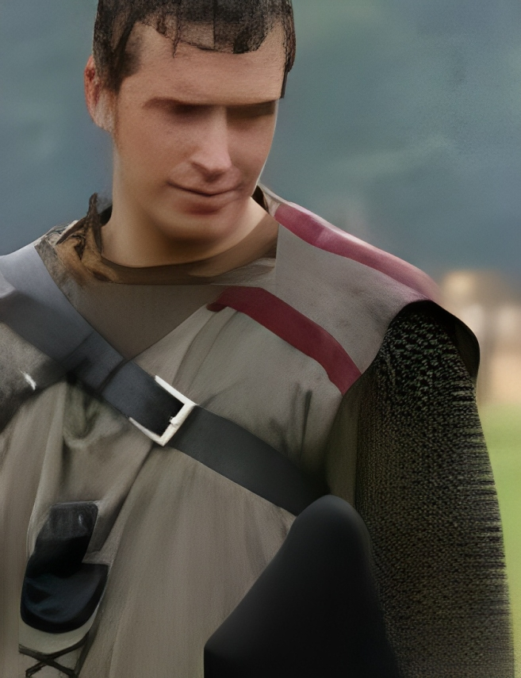

G'day! Fabian was born back in '82 right here in Berlin (West). In his
younger years, he got tangled up with "The Hobbit," and down the track,
he dived headfirst into "The Lord of the Rings." Come the summer of '95,
in the midst of a ripper long holiday with his folks and a boring
cousin, he found himself knee-deep in Dungeons and Dragons books. Mate,
that sparked something fierce in his interest, and he kicked off
exploring Pen and Paper Roleplay, Computer Games, you betcha tabletop
wargaming, and when he hit his twenties, he took a swing at
Live-Action-Roleplay / LARP. Fast forward to now, with a missus and four
ankle-biters, finding time to chuck some dice is rarer than a drop bear
sighting, but he still loves sinking his teeth into a fair dinkum
computer RPG.
Fabian is' 1982 inne Berlin (West) geboren. In seine Kindejahre kamta
mit "The Hobbit" in Berührung und später natürlich ooch mit "The Lord of
the Rings". Im Sommer von 1995, bei 'nem laaangen Sommerurlaub mit seine
Eltern und 'nem echt langweiligen Cousin, hat det dazu jeführt, detta ne
Menge Dungeons and Dragons Bücher jebunkert hat. Weil det Interesse
geweckt war, hat er angefangen, sich mit Pen and Paper Roleplay,
Computagames, natürlich auch Tabletop-Wargaming, und in seine Zwanziger,
mit Live-Action-Roleplay / LARP zu beschäftigen. Nachdem er 'n echtes
Leben mit Frau und vier Kindern jekriegt hat, hatta kaum noch Zeit, sich
hinzusetzen und Würfel zu werfen, aber freut sich über 'n jutes
Computer-RPG.
